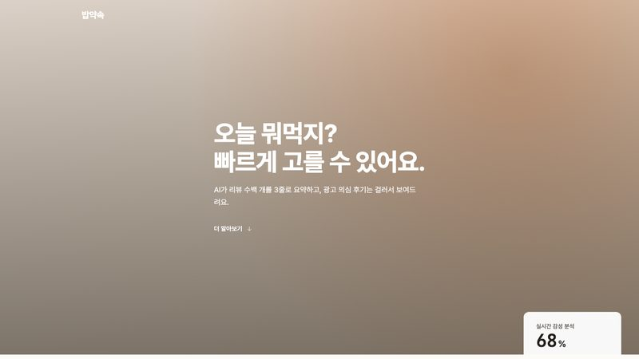
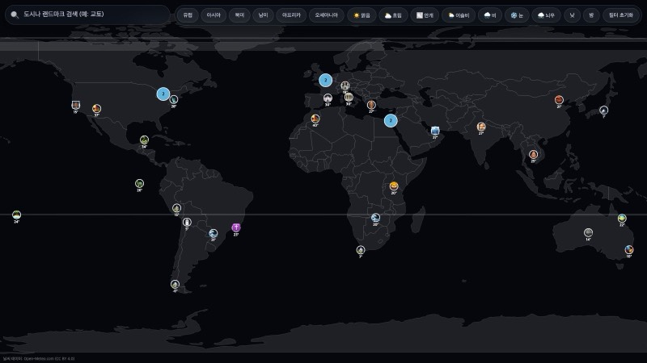
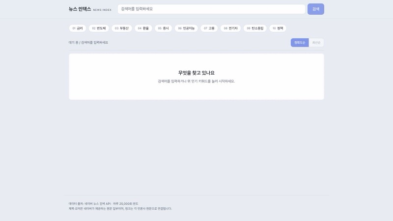
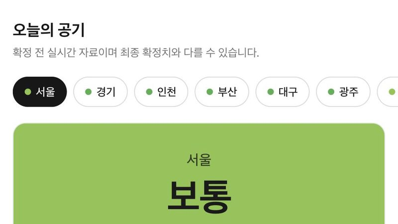
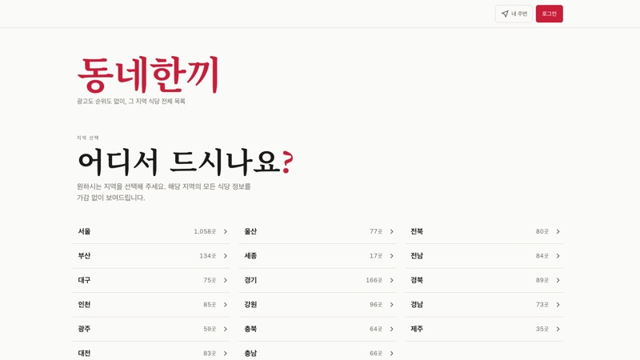
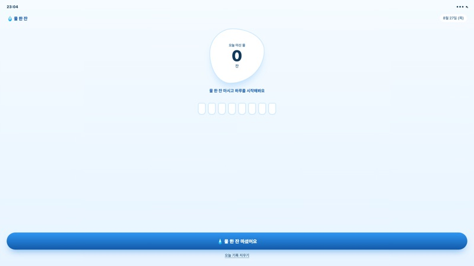

9개 프로젝트가 각자 다른 방식으로 진행 중입니다. 아직 전부 준비 중이라, 카드를 눌러 진행 상황을 볼 수 있습니다.

맛집 리뷰 서비스 제작

랜드마크 날씨 검색 서비스

뉴스 웹사이트

지역별 실시간 미세먼지·초미세먼지 농도 확인 서비스

광고도 순위도 없는 지역 식당 전체 목록 서비스

하루 물 섭취량을 잔 단위로 기록하는 웹앱
음악의 파형에 맞춰 화면이 반응하는 비주얼라이저를 만들고 있습니다
아티스트와 협업해 짧은 뮤직비디오를 촬영하고 그 과정을 기록합니다
배우·스태프와 짧은 내러티브 영상을 촬영해 웹으로 옮깁니다